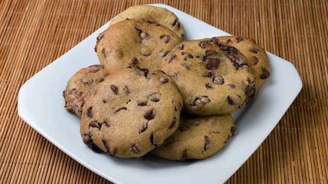

Cookies

Ingredientes
- 208g de açúcar refinado
- 208g de açúcar mascavo
- 176g de manteiga ou margarina
- 6g de sal
- 2 ovos
- 2g de essência de baunilha
- 6g de bicarbonato de sódio
- 500g de farinha de trigo
- 200g de chocolate
Modo de preparo
- Misture bem os dois açúcares, acresente a manteiga e o sal e mexa até virar uma pasta bem homogênea.
- Acrescente os ovos, a essência, o bicarbonato e misture.
- Feita a mistura anterior, adicione a farinha de trigo e mexa até formar uma massa modelável (tenta não amassar muito a massa, por ter gordura ela vai começar a grudar na sua mão, se preciso pode adicionar mais farinha, mas de preferência não).
- Coloque o chocolate e misture bem pra ele se envolver na massa toda.
- Estique um plástico filme em uma superfície. Jogue a massa nele e faça um rolo pra poder envolver no plástico (pense na espessura do rolo como a espessura do seu cookie).
- Deixe o rolo no congelador (para não esparramar na forma)
- Com o rolo congelado, corte ele na espessura do seu dedão (no forno ele vai diminuir e espalhar e isso vai fazer com que ele fique mais macio. Então, se parecer grosso: não está, deixe assim mesmo).
- Use papel manteiga para a forma ou pode untar com manteiga/margarina. Deixe os cookies com uma distância de 3cm para evitar que eles grudem um no outro
- Pré-aqueça o forno em 180°C por uns 15 minutos e coloque a forma com os cookies. Não deixe os cookies dourar por cima, quando a beiradinha de um deles começar a dourar você pode tirar do forno.
- Após tirar do forno deixe esfriar por uns 20 minutos até desenformar e pronto, você já pode se deliciar com seus cookies.
Voltar para a página inicial